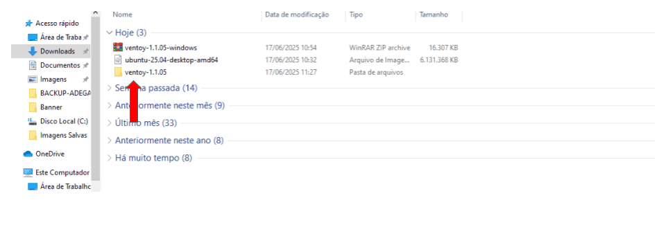
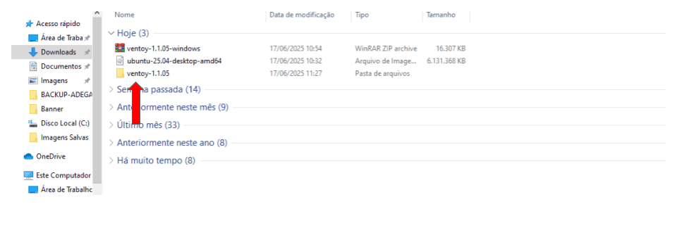

Como Usar o Ventoy para Executar ISOs
 



O que é o Ventoy?
O Ventoy é uma ferramenta gratuita que permite criar um pendrive bootável onde você simplesmente copia arquivos ISO. Nada de extrair ou criar imagem — é só copiar e usar.
Passo 1: Baixe o Ventoy
Acesse o site oficial do Ventoy em ventoy.net e baixe a versão mais recente. Depois, navegue até a página de download.
Passo 2: Instale no pendrive
- Extraia o arquivo ZIP do Ventoy.
- Execute o programa Ventoy2Disk.exe (no Windows).
- Escolha o seu pendrive e clique em Install.
Passo 3: Adicione arquivos ISO
Com o pendrive pronto, basta copiar os arquivos .iso para a raiz do pendrive. Exemplo:
Ventoy (Pendrive)
├── AcronisTrueImage2021.iso
├── linuxmint-21.2-cinnamon-64bit.iso
├── Windows.iso
Passo 4: Dê boot pelo pendrive
Reinicie seu computador, entre na BIOS/UEFI e escolha iniciar pelo pendrive. O Ventoy mostrará uma lista das ISOs disponíveis para você selecionar.
Dicas Extras
- Você pode atualizar o Ventoy no pendrive sem perder as ISOs.
- Funciona com sistemas Linux, Windows, ferramentas de recuperação e muito mais.